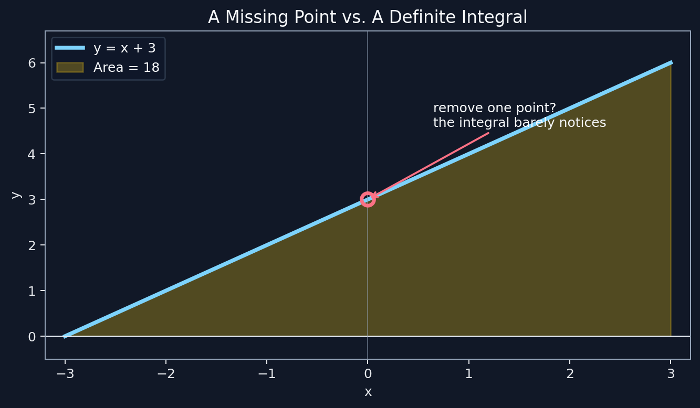
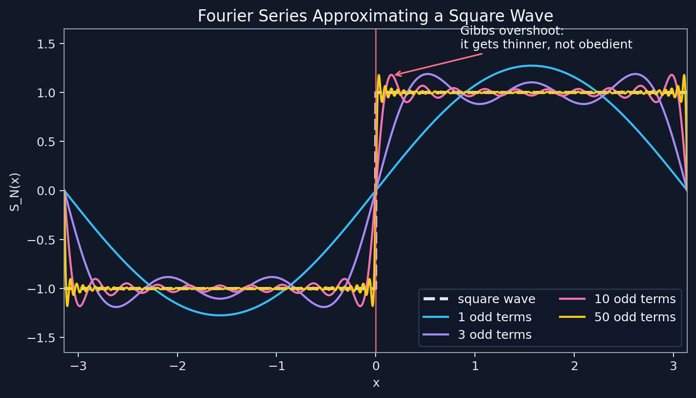
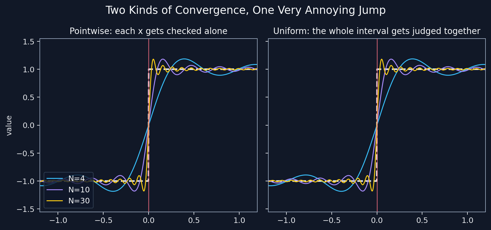

Fourier Series: The Birth of an Engineering Nightmare
Group: SOS
Authors: Wang Junbo, Zhang Jiage, Chen Liuyi
Topic: Fourier and Fourier Series: The Birth of an Engineering Nightmare
Topic Short: Fourier Series
QMD file name: fourier_series.qmd
Prologue: how dangerous is one missing point?
Let us begin with a tiny question that looks too harmless to deserve supervision.
Take the function
\[ f(x)=x+3 \]
on the interval \([-3,3]\). Its definite integral is
\[ \int_{-3}^{3} (x+3)\,dx = 18. \]
Geometrically, it is just the area of a triangle. Nothing dramatic. No thunder. No mathematical police report.
Now delete the point \(x=0\) from the interval.
Does the integral panic?
No. It keeps calmly being 18.
Delete three points? Still 18. Delete one hundred specific points? Still 18. At this stage the integral is basically saying, “Call me when something serious happens.”

This innocent observation is the trap door of the story. Once mathematicians began asking what happens when we remove infinitely many points, or when a function has infinitely many tiny bad behaviors, calculus stopped being a comfortable machine and became a detective novel.
And one of the people who kicked open that door was Jean-Baptiste Joseph Fourier.
Fourier enters, accidentally holding a match
Fourier was not born as “the reason engineering students lose sleep.” That title had to be earned.
During the French Revolution, Fourier was young, politically involved, arrested, and lucky enough not to become a historical footnote with a very short ending. In 1798 he joined Napoleon’s expedition to Egypt as a scientific adviser. According to MacTutor, Fourier later became secretary of the Institut d’Egypte, then returned to France and was appointed prefect of Isere by Napoleon.
That sounds like a strangely busy resume:
- Survive revolutionary France.
- Go to Egypt with Napoleon.
- Become a government administrator.
- Quietly create a mathematical tool that will haunt physics, engineering, signal processing, and basically every classroom with a waveform in it.
The haunting began with heat.
Fourier studied heat conduction: how temperature spreads through a solid object. Today that sounds like a normal applied mathematics problem. At the time, it was more like asking mathematics to cook dinner with tools it had not invented yet.
His major work, The Analytical Theory of Heat (1822), attacked heat flow using partial differential equations. But the real historical explosion came from the method he used to solve them: representing functions as infinite sums of sine and cosine waves.
The wave machine
Fourier’s bold idea was that many functions can be represented by a trigonometric series:
\[ f(x)\sim \frac{a_0}{2}+\sum_{n=1}^{\infty}\left(a_n\cos nx+b_n\sin nx\right). \]
For a periodic function, the coefficients are chosen by integration:
\[ a_n=\frac{1}{\pi}\int_{-\pi}^{\pi} f(x)\cos(nx)\,dx, \qquad b_n=\frac{1}{\pi}\int_{-\pi}^{\pi} f(x)\sin(nx)\,dx. \]
This is already weird in a beautiful way. Sine and cosine are smooth, polite, well-trained functions. Fourier then said, in effect:
What if we use infinitely many polite waves to imitate functions that are absolutely not polite?
For example, the square wave
\[ f(x)= \begin{cases} -1, & -\pi < x < 0,\\ 1, & 0 < x < \pi \end{cases} \]
has the Fourier series
\[ S_N(x)=\frac{4}{\pi}\sum_{k=0}^{N-1}\frac{\sin((2k+1)x)}{2k+1}. \]
The formula says: take a sine wave, add a smaller sine wave with triple frequency, add a smaller one with five times the frequency, and continue. Somehow, the result begins to look like a square wave.
Mathematically, this is elegant.
Emotionally, it feels illegal.

Interactive: operate the nightmare machine
Move the slider below. The blue curve is the Fourier partial sum for a square wave. The white dashed line is the square wave it is trying very hard to become. Watch near \(x=0\), where the jump occurs.
Gibbs phenomenon: the jump that refuses therapy
Near the discontinuity, the Fourier partial sums overshoot. Adding more terms makes the wiggle narrower, but the height of the first overshoot approaches about 9 percent of the jump. Wolfram MathWorld describes the Gibbs phenomenon as an overshoot or ringing near simple discontinuities in Fourier series and similar expansions.
This is the awkward part:
- Away from the jump, the Fourier series behaves beautifully.
- At the jump, the Fourier series converges to the midpoint of the left and right limits.
- Near the jump, the approximation keeps overshooting.
So is the Fourier series “equal” to the square wave?
The correct mathematical answer is: “Please define what you mean by equal, then come back with coffee.”
In modern language, the square-wave Fourier series converges pointwise to the square wave at every continuity point. But it does not converge uniformly on an interval containing the jump.
That distinction matters.
Pointwise convergence vs. uniform convergence
Pointwise convergence is the chill judge. For each fixed \(x\), it asks:
If I wait long enough, does \(S_N(x)\) approach \(f(x)\)?
Uniform convergence is the strict judge. It asks:
Can one large enough \(N\) make the whole function close to \(f\) everywhere at once?
Symbolically, pointwise convergence says
\[ \lim_{N\to\infty}S_N(x)=f(x) \quad \text{for each fixed }x. \]
Uniform convergence says
\[ \lim_{N\to\infty}\sup_x |S_N(x)-f(x)|=0. \]
Pointwise convergence checks one seat in the classroom at a time. Uniform convergence checks whether the entire classroom is behaving simultaneously. Unsurprisingly, the second one is harder, because classrooms contain jumps, and jumps have attitude.

This was not just a technical footnote. Fourier series forced mathematicians to separate several ideas that used to be mushed together:
- a function,
- its formula,
- its graph,
- a series representation,
- and the kind of convergence being used.
Fourier did not merely solve heat problems. He made analysis admit that its vocabulary was underdeveloped.
Dirichlet: “Fine, let us define a function properly”
Before the nineteenth century, many mathematicians thought of functions as formulas or curves. That works nicely until Fourier walks in with a series of smooth waves pretending to be a discontinuous square wave.
At that moment, the old idea of “function” started sweating.
Dirichlet helped clarify the modern view: a function is not required to be a nice formula or a drawable curve. A function is a rule assigning exactly one output to each input in its domain. MacTutor notes that Fourier’s work eventually helped clarify the function concept, especially through Dirichlet’s work on Fourier series and convergence.
Then Dirichlet gave a famous example that feels like mathematics doing a stress test on reality:
\[ D(x)= \begin{cases} 1, & x \in \mathbb{Q},\\ 0, & x \notin \mathbb{Q}. \end{cases} \]
This function is 1 on rational numbers and 0 on irrational numbers.
Can you draw it?
No. The graph is basically a printer jam in the universe. Between any two rational numbers there is an irrational number, and between any two irrational numbers there is a rational number. No matter how much you zoom in, the function keeps switching between 0 and 1.
But it is still a function.
This is the kind of example that makes old definitions quietly pack their bags.
Riemann, Lebesgue, and the revenge of bad points
Now return to the opening question.
Removing one point from an interval does not change our ordinary integral. Removing finitely many points also does not change it. But what about infinitely many points? What if the bad points are everywhere? What if every microscope reveals more chaos?
That is where integration itself had to evolve.
The Riemann integral, the one most calculus students meet first, slices the \(x\)-axis into intervals and builds sums from vertical rectangles. It handles continuous functions very well and many discontinuous functions too. But the Dirichlet function defeats it on \([0,1]\): every interval contains both rational and irrational numbers, so the upper sums act like the function is 1 everywhere and the lower sums act like it is 0 everywhere. They never agree.
Lebesgue’s later idea was different. Instead of slicing only by \(x\)-position, it measures the size of the sets on which the function takes certain values. Since the rational numbers in \([0,1]\) are countable, they have measure zero. For the Dirichlet function above, the Lebesgue integral over \([0,1]\) is therefore 0.
That is a major plot twist:
Riemann says, “I cannot integrate this.”
Lebesgue says, “I can, but I will need a new worldview.”
And this worldview is connected to the same issue that Fourier series made impossible to ignore: bad points are not all equally dangerous. Some are isolated. Some are dense. Some have measure zero. Some wreck the entire calculation. Calculus had to learn the difference.
So what did Fourier really break?
Fourier wanted to solve heat conduction. That was the official mission.
The side effects were larger:
- He made trigonometric series central to analysis.
- He showed that smooth waves can approximate discontinuous behavior.
- He exposed the difference between pointwise and uniform convergence.
- He pushed mathematicians toward a sharper definition of function.
- He helped set the stage for later theories of integration and measure.
In other words, Fourier did not just hand engineers a tool. He handed mathematicians a box of suspiciously powerful tools with no safety manual.
The Fourier series was successful in physics and engineering before analysis fully understood why it worked. That is exactly what makes the story interesting: applications ran ahead, theory chased behind, and somewhere in the middle a square wave was causing trouble with excellent timing.
Discussion-ready summary
If I had to explain this story verbally, I would say:
Fourier series began as a method for heat conduction, but it forced mathematicians to ask what it really means for a series of functions to represent another function. The square wave and Gibbs phenomenon show why convergence is not one simple idea. This led to sharper distinctions such as pointwise versus uniform convergence, and it helped motivate broader modern ideas about functions, integration, and bad sets of points.
Or, less politely:
Fourier tried to solve heat, and analysis caught fire.
How AI was used responsibly
AI was used as a writing and organization assistant: to translate the original Chinese draft into English, polish the humor, improve section structure, and check whether the mathematical story was clear for fellow students. The main ideas, jokes, and storyline come from the original draft. Mathematical claims and historical details were checked against references, and the final page should be understood and explainable by the authors.
References and fact checks
- J. J. O’Connor and E. F. Robertson, Joseph Fourier - Biography, MacTutor History of Mathematics.
- J. J. O’Connor and E. F. Robertson, Lejeune Dirichlet - Biography, MacTutor History of Mathematics.
- MacTutor History of Mathematics, The function concept.
- Eric W. Weisstein, Gibbs Phenomenon, Wolfram MathWorld.
- J. J. O’Connor and E. F. Robertson, Henri Lebesgue - Biography, MacTutor History of Mathematics.